当生活中有一些事情并不尽如人意的时候, 我们便寄托于孩子. 我们希望, 我们经验中的一些东西, 我们自己搞错的一些东西, 也许可以帮助他们. 而实际上, 这只是一个巨大的幻觉, 孩子们还是会犯他们自己的错误. 但是, 很有趣的是, 我们对孩子重复着我们从家长那里听来的相同东西, 那些话在我们的身上从来就没起到任何作用, 但是由于种种原因, 我们需要向我们的孩子重复这些话.
——克里斯蒂安·蒙吉
马上，近千万的学生将踏上高考这座独木桥。
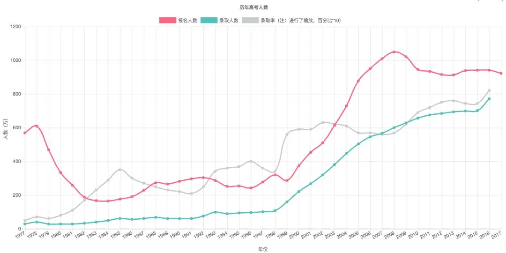
在那里，他们将面临最残酷的竞争，提高一分真的就可以干掉一千人。
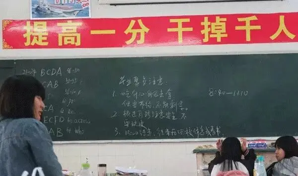
高考牵动着无数家庭的心。
有人为孩子彻夜失眠，有人为孩子烧香拜佛，更有人已经未雨绸缪，穷尽所有关系和财力想着为孩子铺垫后路。
可是，就是如此重要、充满心酸和灰暗的高考，除了一两部纪录片，我们国家却没有一部与之相配的优秀电影。
这不可以不说是一个国家的悲哀。
不过，虽然我们没有，但是和我们有着共同社会主义基因的罗马尼亚却有。
那就是克里斯蒂安·蒙吉的《毕业会考》，曾获得2016年戛纳电影节最佳导演奖。
这部电影所表现的故事和探讨的问题完全适合我们中国。
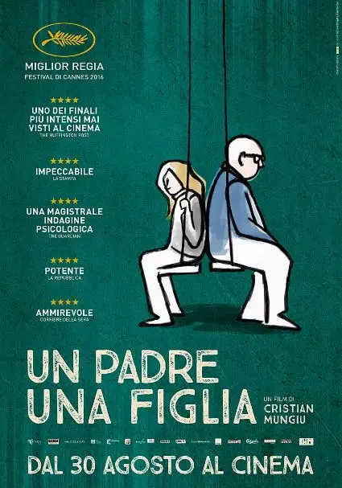
1989年，罗马尼亚发生革命，独裁者齐奥塞斯库及其妻子被枪毙，整个社会开始朝着民主转型。
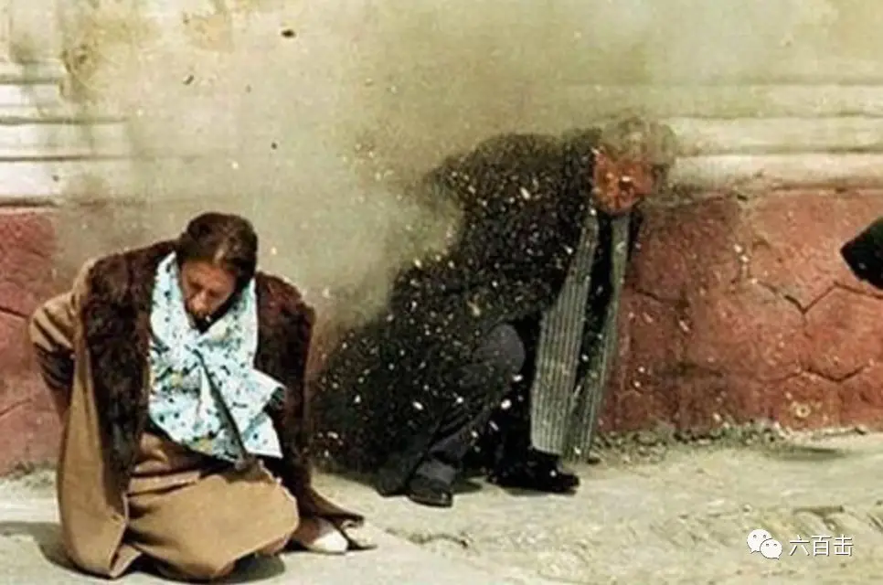
一大批海外同胞因此怀着雄心壮志回国投入到新的建设中。
主人公罗密欧和妻子便是其中之一。
回国后，罗密欧成为一所医院的外科医生，妻子则在一个图书馆做着图书管理的工作。
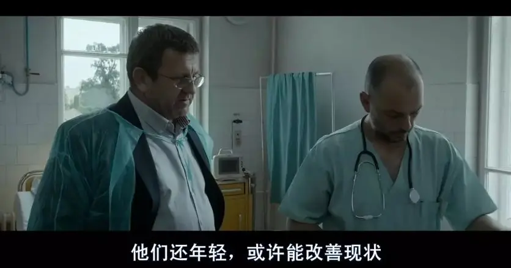
他们在这片土地上挥洒了自己全部的青春，但却对这个国家彻底绝望了。
虽然他们衣食无忧，国家也没有什么大的动乱，但是贪污腐败、死气沉沉的社会让他们看不到一点希望。
他们后悔自己当初的决定，罗密欧厌恶身边的一切，而妻子经常处于抑郁之中，手不离烟。
作为一个过来人，罗密欧唯一的希望就是将自己的女儿送出国，让她彻底离开这个乌烟瘴气的死水潭。
女儿也很争气，拿到了英国两所大学的奖学金。
只要女儿在毕业考试上取得不错的成绩，女儿将可以顺利留学英国。
可是，就在考试前夕，女儿却遭遇袭击，光天化日之下差点被人强奸。
这不仅伤到了女儿的右手，同时也给女儿带来巨大的心理阴影。
这都将会影响女儿考试的正常发挥。
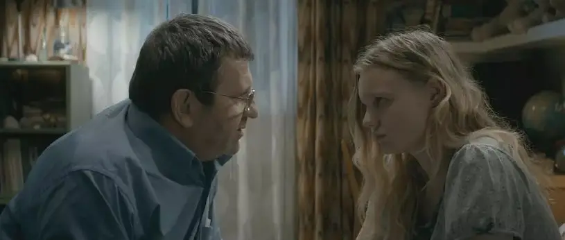
在这个至关重要的时刻，罗密欧为了女儿不惜贿赂官员买通阅卷老师，走上了一条游走于良心和谎言之间的灰色之路......
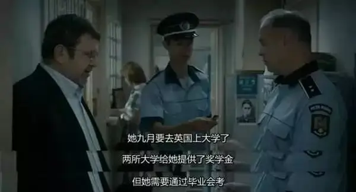
这部作品的剧作非常出色，通过一场考试、一个事故、一个家庭全面的反映了罗马尼亚的现状。
导演利用这些情节，将每个人都置身于道德的拷问之下。
罗密欧有着知识分子的骨气和骄傲，他在工作上尽心尽责，也不收取病人的红包。
但是为了女儿，他不得不违背自己的良心，做起了自己曾经所不齿的事情，企图用关系和手段来达成自己的目的。
而副市长恰好是罗密欧的病人，他面临以权谋私还是保持正直的选择。
为了求得心安，他不仅请求罗密欧收下自己的红包，还主动帮助罗密欧解决女儿面临的困境。
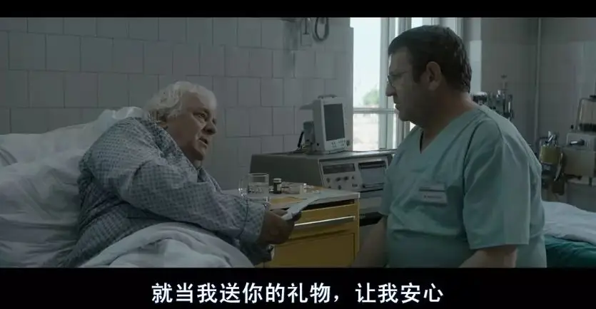
而是否支持罗密欧的做法，是他妻子所面对的问题。
女儿则面临是否按照父亲的要求在试卷上做标记的挑战。
更有意思的是，导演利用大家不同的看法去强化了这种困境。
妻子并不同意罗密欧的做法，女儿也非常不理解父亲为什么这样做，因为此前，父亲一直教导她要诚实守信。
这也是导演的目的，蒙吉曾说：
整部电影不仅仅是我对于发生的事情的观点, 还包括了很多失望的情绪. 一些属于我, 大部分的失望来自于我所在的社会, 更多的, 我想这些失望大多数也属于你。
我觉得现在是一个人们非常容易感觉到失望的年代。
他们不想接受事实的原因, 是因为审视自己是一件很难的事情: 你发现自己并不是一个很好的人, 你做了很多并不太正确的决定。
这就是我为什么拍这部电影的原因。
当导演利用剧作将罗密欧终于推到自我审视的漩涡中，我们终于窥见了罗马尼亚的最大问题：令人无奈的坏境和集体无意识的虚伪。
老人需要照顾、女儿需要出路、家庭需要维护，罗密欧处于巨大的中年危机中。
面对突发的状况，罗密欧一直处于煎熬的选择中。
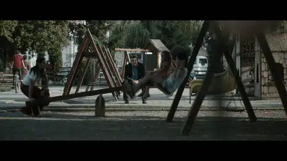
| 导演用类似天平的画面来表现罗密欧心中的利弊权衡和道德焦虑
在暗夜里，罗密欧曾经挣扎迷茫过，并且一个大男人还哭了起来。
但是想到死气沉沉的现状，他终于下定决心，一定要送女儿出国。
当妻子告诉他：
一旦女儿选择了这条路，就没办法回头了，你没法摆脱他 ，没法假装什么都没发生人.....
你其实非常清楚，这样做是不对的，这不是我想让伊丽莎选择的人生道路，我确信这也不是你希望的。
但是下定决心的罗密欧则完全抛开了道德和公平，坚信为了最终的目的可以不择手段：
每个人都会在期末考试作弊，这场考试毫无用处，甚至是他们在学校所学的都没有用，只有迈入正常的世界才能学到东西。
你希望他在这个鬼地方生活么，正因为你的公平 ，所以你一辈子在图书馆工作，有时候结果更重要....
这是我们的决定，女儿无需内疚。
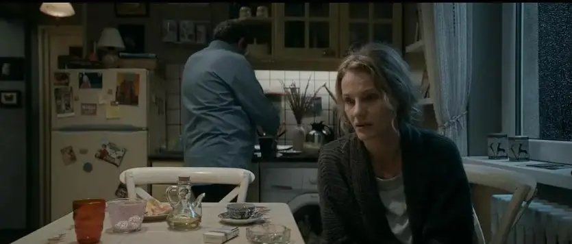
面对女儿的质疑，罗密欧语重心长地告诉她：
当年革命后，我和你母亲决定回国生活，现在我们已经付出了代价。
改变这个国家，我们留在这就够了，你还是要离开。
伊丽莎 ，你必须全力以赴，否则会抱憾终身，细节决定了人生的某些重要阶段，有些机会不该浪费，有时候人生只有最终的结果是最重要的。
我们一直教导你要诚实守信，但是这就是我们所处的世界，有时候我们要用别人的武器来斗争.....改变我们的社会，让别人尝试吧 ,我们已经尽了自己最大的努力了。
我想你明白人生总有输赢，而我们希望你是赢家，过上好日子，因为你别无他选，人人都只考虑自己....
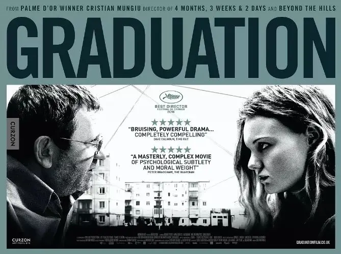
罗密欧描述的丛林世界和令人无可奈何的现实让自己的不道德合理化，并让妻子和女儿哑口无言。
但是，当女儿撞破他的婚外情并站在罗密欧和秘密情人的面前时。
罗密欧的话在女儿心中已经没有了分量。
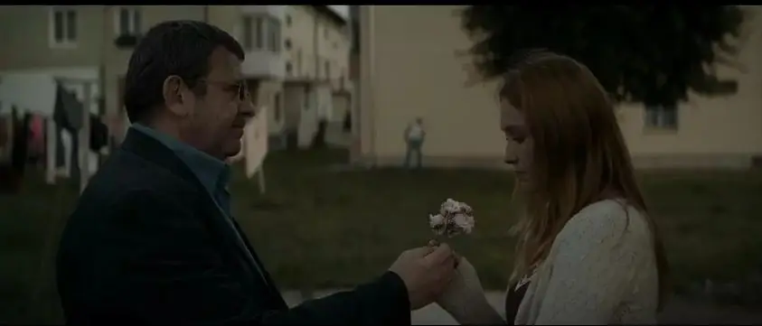
原来，罗密欧早已是大染缸里的一员，在家人、社会的面前，他一直戴着面具。
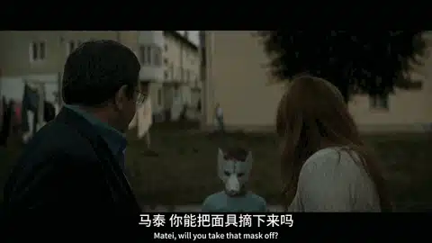
虽然导演没有明确，但是透过这些细节我们终于可以明白为什么有人向罗密欧家丢石头，并在考试前夕暴力袭击罗密欧的女儿。
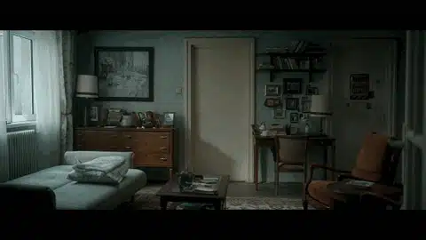
此前罗密欧曾追踪过凶手，但是他并没有找到凶手。
但我们可以知道凶手恰好住在罗密欧情人附近的居民区里。
正是罗密欧的出轨引起了别人的仇恨，导致女儿在考试前夕被袭击，也才有了后面的铤而走险。
原来，所谓的无可奈何很多时候都是源自于自己的不义和虚伪。
这部电影所揭露的真相同样适用于我们。
我们自己在撒谎，却教导孩子做个诚实的人。
我们从心底里不相信公平，却不断教育孩子要好好学习书本的道理。
当孩子毕业的时候，我们却用真实的行动和话语告诉他们，关系和金钱才是硬道理。
更可怕的是，我们不仅没有审视和良心不安，竟然还四处夸耀着自己的手段和方法。
对于这些，一个无望的社会是对所有背离真理的人的最大处罚。
无论是罗马尼亚，还是我们，腐败虽然来源于环境，但首先是开始于你的认同和沉默。
处于其中，公平需要付上更大的代价。
当有人愿意背起沉重的十字架向真理和公义忠诚的时候，我们才会有真正的盼望和平安。
关注并回复：毕业会考
获取电影资源
相关推荐：
奥斯卡影帝，你把自己演死了
73年过去了，纳粹离我们有多远？
这是一部无神论永远都看不懂的获奖电影！
这里没有挑逗你眼目情欲的小鲜肉
也没有挑动你肉体情欲的段子
更没有膨胀你今生骄傲的鸡血
我们只在乎那些最质朴真诚的作品
在那里我们才能恢复真正的想象力
我们也坚信这才是我们真正需要的

ID:Six_hundred_hits
长按二维码，一键关注
【六百击】
-END-
电影评论
尽情分享朋友圈

苹果打赏
通道
小提示：文末广告是腾讯配送广告，内容与本号无关，但您的每次点击（无需反复点）都会给平台带来几毛收益，欢迎您点击支持六百击。